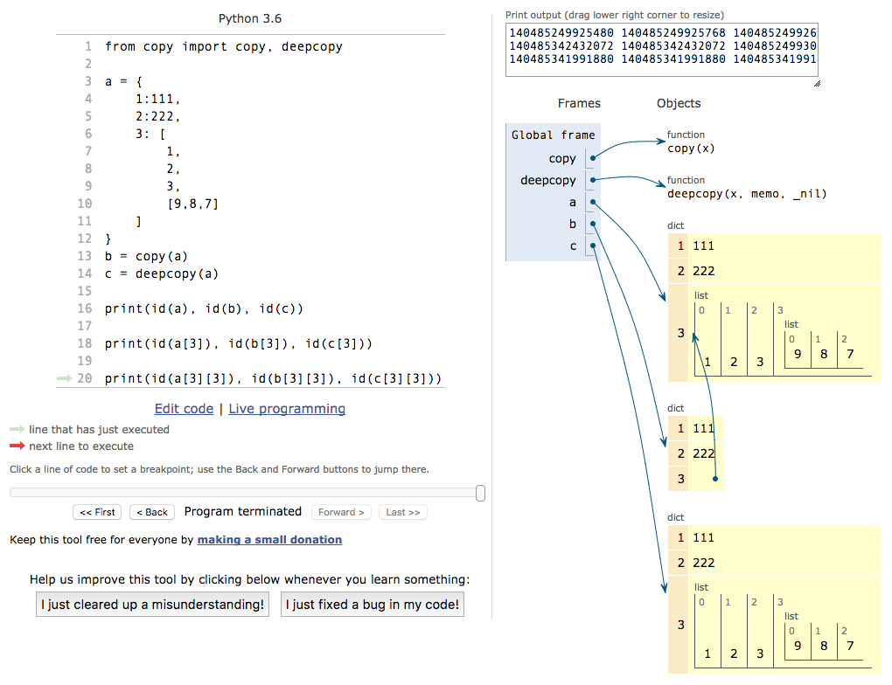
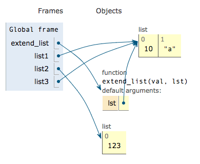
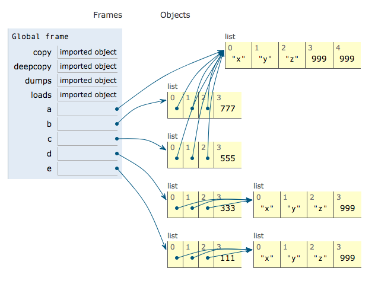
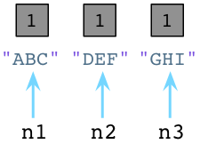
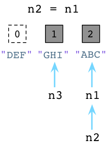

Python 进阶
1. PEP8 编码规范, 及开发中的一些惯例和建议
练习: 规范化这段代码
1 | from django.conf import settings |
为什么要有编码规范
编码是给人看的还是给机器看的？
美观是重点吗？
- 美观
- 可读性
- 可维护性
- 健壮性
团队内最好的代码状态: 所有人写出的代码像一个人写出来的
代码编排:
- 缩进 4 个空格, 禁止空格与 Tab 混用
- 行长 80 字符: 防止单行逻辑过于复杂
import
- 不要使用
from xxx import * - 顺序
- 标准库
- 第三方库
- 自定义库
- 单行不要 import 多个库
- 模块内用不到的不要去 import
空格
: ,后面跟一个空格, 前面无空格 (行尾分号后无空格)- 二元操作符前后各一个空格, 包括以下几类:
- 数学运算符:
+ - * / // = & | - 比较运算符:
== != > < >= <= is not in - 逻辑运算符:
and or not - 位运算符:
& | ^ << >> - 当
=用于指示关键字参数或默认参数值时, 不要在其两侧使用空格
- 数学运算符:
适当添加空行
- 函数间: 顶级函数间空 2 行, 类的方法之间空 1 行
- 函数内: 同一函数内的逻辑块之间, 空 1 行
- 文件结尾: 留一个空行 (Unix 中 \n 是文件的结束符)
注释
- 忌: 逐行添加注释, 没有一个注释
- 行尾注释: 单行逻辑过于复杂时添加
- 块注释: 一段逻辑开始时添加
- 引入外来算法或者配置时须在注释中添加源连接, 标明出处
- 函数、类、模块尽可能添加
docstring“”” string “””
命名
- 好的变量名要能做到“词能达意” 见名知意
- 除非在 lambda 函数中, 否则不要用 单字母 的变量名 (即使是 lambda 函数中的变量名也应该尽可能的有意义)
- 包名、模块名、函数名、方法、普通变量名全部使用小写, 单词间用下划线连接
- 类名、异常名使用 CapWords (首字母大写) 的方式, 异常名结尾加
Error或Wraning后缀 - 全局变量尽量使用大写, 一组同类型的全局变量要加上统一前缀, 单词用下划线连接
- 函数名必须有动词, 最好是 do_something 的句式, 或者 somebody_do_something 句式
语意明确、直白
not xx in yyVSxx not in yynot a is bVSa is not b
程序的构建
- 函数是模块化思想的体现
- 独立的逻辑应该抽离成独立函数，让代码结构更清晰，可复用度更高
- 一个函数只做一件事情, 并把这件事做好
- 大的功能用小函数之间灵活组合来完成
- 避免编写庞大的程序, “大” 意味着体积庞大, 逻辑复杂甚至混乱
自定义的变量名、函数名不要与标准库中的名字冲突
pip install pycodestyle pylint flake8 autopep8
2. * 和 ** 的用法
函数定义时接收不定长参数
1 | def foo(*args, **kwargs): |
参数传递
1 | def foo(x, y,*,z, a, b): # 此处的* 表示后面的参数必须都是关键字参数 |
import * 语法
文件 xyz.py
1 | __all__ = ('a', 'e', '_d') # 指明导包的时候只能倒入 a,e,_d |
文件abc.py
1 | from xyz import * # 只导入了 a,e,_d |
3. Python 的赋值和引用
==, is: == 判断的是值, is 判断的是内存地址 (即对象的id)
小整数对象: [-5, 256] # 性能优化 小整数对象内存地址都是一样的，is返回True，大整数 is 返回 false
copy, deepcopy 的区别
copy: 只拷贝表层元素
deepcopy: 在内存中重新创建所有子元素

练习1: 说出执行结果

1 | def extendList(val, lst=[]): |
练习2: 说出下面执行结果

1 | from copy import copy, deepcopy |
自定义 deepcopy: my_deepcopy = lambda item: loads(dumps(item, 4))
dumps 对象序列化 loads 加载， dumps(item, 4) 4表示协议，协议（1，2，3，4）越高，序列化速度越快
4. 迭代器, 生成器
练习: 说出如下代码的打印结果
1 | def foo(): |
generator: 生成器是一种特殊的迭代器, 不需要自定义 __iter__ 和 __next__
- 生成器函数 (yield)
- 生成器表达式 ((i for i in range(10)) 生成器
1 | class Range: |
iterator: 任何实现了 __iter__ 和 __next__ 方法的对象都是迭代器.
__iter__ 得到一个迭代器。迭代器的__iter__()返回自身
__next__ 返回迭代器下一个值
如果容器中没有更多元素, 则抛出 StopIteration 异常
Python2中没有 __next__(), 而是 next()
可迭代对象是指实现了__iter__方法，没有实现__next__方法
str / bytes / list / tuple / dict / set 自身不是迭代器，他们自身不具备 __next__(), 但是具有 __iter__(), __iter__() 方法用来把自身转换成一个迭代器
练习1: 定义一个随机数迭代器, 随机范围为 [1, 50], 最大迭代次数 30
1 | import random |
练习2: 自定义一个迭代器, 实现斐波那契数列
1 | class Fib: |
练习3: 自定义一个生成器函数, 实现斐波那契数列
1 | def fib(max_value): |
迭代器、生成器有什么好处？
- 节省内存
- 惰性求值 （惰性求值思想来自于 Lisp 语言）
各种推导式
- 分三部分：生成值的表达式, 循环主体, 过滤条件表达式
- 列表:
[i * 3 for i in range(5) if i % 2 == 0] - 字典:
{i: i + 3 for i in range(5)} - 集合:
{i for i in range(5)}
5. 装饰器 AOP编程思想， 面向切面编程
最简装饰器
1 | from functools import wraps |
原理
对比被装饰前后的 foo.__name__ 和 foo.__doc__
装饰器改变了原函数的doctoring和name 使用wraps装饰器解决
1 | from functools import wraps |
简单过程
1 | fn = deco(func) |
多个装饰器叠加调用的过程
1 |
|
带参数的装饰器
1 | def deco(n): |
装饰器类和 __call__
1 | class Deco: |
使用场景
- 参数、结果检查
- 缓存、计数
- 日志、统计
- 权限管理
- 重试
- 其他
练习1: 写一个 timer 装饰器, 计算出被装饰函数调用一次花多长时间, 并把时间打印出来
1 | import time |
练习2: 写一个 Retry 装饰器
1 |
|
6. 函数闭包
Function Closure: 引用了自由变量的函数即是一个闭包. 这个被引用的自由变量和这个函数一同存在, 即使已经离开了创造它的环境也不例外.
说出下面函数返回值
1 | def foo(): |
深入一点: object.__closure__ （对象，） list_cell, = object.__closure__ 解包
object.cell_contents 返回闭包中自由变量的值
作用域
1 | ┌───────────────────────────┐ |
声明全局变量: global
声明非本层的 局部变量 : nonlocal
查看全局变量: globals()
- 查看局部变量:
locals()- 查看变量:
vars([object]) # 不传参数相当于 locals(), 传入对象后, 会得到 object.__dict__
- 查看变量:
7. 类方法和静态方法
method 普通方法
- 通过实例调用
- 可以引用类内部的任何属性和方法
- 第一个参数是self，代表实例对象本身
classmethod
- 无需实例化，实例对象和类名都可以调用
- 可以调用类属性和类方法
- 无法取到普通的成员属性和方法
- 第一个参数是cls,表示类本身
staticmethod
- 无需实例化
- 无法取到类内部的任何属性和方法, 完全独立的一个方法
- 无需传任何参数
练习: 说出下面代码的运行结果
1 | class Test(object): |
8. 继承相关问题
什么是多态
1 | class Animal: |
多继承
方法和属性的继承顺序: Cls.mro() 继承链
菱形继承问题
1 | 继承关系示意 |
Mixin: 通过单纯的 mixin 类完成功能组合
super 会根据执行链去调用
1 | class A: |
9. 垃圾收集 (GC) 引用计数，标记清除，分代收集
Garbage Collection (GC)
引用计数
优点: 简单、实时性高
 ==> 
缺点: 消耗资源、循环引用
1 | lst1 = [3, 4] # lst1->ref_count 1 |

标记-清除, 分代收集（老，中，新） # 循环引用的话引用计数没法清除，使用标记清除（链表）
用来回收引用计数无法清除的内存
10. Python 魔术方法
__str__ 格式化输出对象 print 的时候调用
__repr__ 实现此方法，则可以用__str__方法中的内容代替对象本身
__init__ 和 __new__
__new__创建一个实例，并返回类的实例__init__初始化实例，无返回值__new__是一个特殊的类方法,不需要使用@classmethod来装饰.- 单例模式 或者 利用python模块的唯一属性，新建一个py文件，实例化一个类，导包就可以
1
2
3
4
5
6
7class A(object):
'''单例模式'''
obj = None
def __new__(cls, *args, **kwargs):
if cls.obj is None:
cls.obj = object.__new__(cls)
return cls.obj
- 单例模式 或者 利用python模块的唯一属性，新建一个py文件，实例化一个类，导包就可以
数学运算、比较运算
运算符重载
+:__add__(value)-:__sub__(value)substract*:__mul__(value)mulply/:__truediv__(value)(Python 3.x),__div__(value)(Python 2.x) divide//:__floordiv__(value)%:__mod__(value)&:__and__(value)|:__or__(value)
练习: 实现字典的
__add__方法, 作用相当于 d.update(other)1
2
3
4
5
6
7
8
9class Dict(dict):
def __add__(self, other):
if isinstance(other, dict):
new_dict = {}
new_dict.update(self)
new_dict.update(other)
return new_dict
else:
raise TypeError('not a dict')比较运算符的重载
==:__eq__(value)!=:__ne__(value)>:__gt__(value)>=:__ge__(value)<:__lt__(value)<=:__le__(value)
练习: 完成一个类, 实现数学上无穷大的概念 应该写成一个单例，实例化两个对象后会出现矛盾
1
2
3
4
5
6
7
8
9
10
11
12
13class Inf:
def __lt__(self, other):
return False
def __le__(self, other):
return False
def __ge__(self, other):
return False
def __gt__(self, other):
return True
def __eq__(self, other):
return False
def __ne__(self, other):
return True
容器方法
__len__-> len__iter__-> for__contains__-> in__getitem__对string, bytes, list, tuple, dict有效__setitem__对list, dict有效__missing__对 dict 有效, 字典的预留接口, dict 本身并没有实现1
2
3class Dict(dict):
def __missing__(self, key):
self[key] = None # 当检查到 Key 缺失时, 可以做任何默认行为可执行对象:
__call__上下文管理 with:
__enter__进入with代码块前的准备操作__exit__退出时的善后操作文件对象、线程锁、socket 对象 等 都可以使用 with 操作
示例
1
2
3
4
5
6class A:
def __enter__(self):
return self
def __exit__(self, Error, error, traceback):
print(Error, error, traceback)python的自省
__setattr__, __getattribute__, __getattr__, __dict__内建函数：
setattr(), getattr(), hasattr()python的内省.常用来做属性监听
1
2
3
4
5
6
7
8
9
10
11
12
13
14
15
16
17
18
19
20
21
22
23
24
25
26
27
28class User:
'''TestClass'''
z = [7,8,9]
def __init__(self):
self.money = 10000
self.y = 'abc'
def __setattr__(self, name, value): # setattr()设置实例属性
if name == 'money' and value < 0:
raise ValueError('money < 0')
print('set %s to %s' % (name, value))
object.__setattr__(self, name, value)
def __getattribute__(self, name): # getattr()获取属性 第三个参数返回默认值，不再报错
print('get %s' % name)
return object.__getattribute__(self, name)
def __getattr__(self, name): # 当拿不到属性的时候，调用此方法
print('not has %s' % name)
return -1 # hasattr() 判断是否有属性,对应__dict__魔术方法
def foo(self, x, y):
return x ** y
# 对比
a = User()
print(User.__dict__)
print(a.__dict__)槽:
__slots__固定类所具有的属性，不能动态添加属性
实例不会分配
__dict__实例无法动态添加属性
优化内存分配, 大概能节约40%的内存.
1
2class A:
__slots__ = ('x', 'y')
11. Python 性能之困
1、计算密集型
CPU 长时间满负荷运行, 如图像处理、大数据运算、圆周率计算等
计算密集型: 用 C 语言补充或者换编译器，目前是Cpython， 试试Pypi
Profile, timeit 选择进程
2、I/O 密集型 (input/output)
网络 IO, 文件 IO, 设备 IO 等
一切皆文件 选择线程
3、多任务处理
进程、线程、协程调度的过程叫做上下文切换
进程、线程、协程对比
进程是系统资源分配的最小单位。线程是系统调度的最小单位。协程是微线程，是线程的进化
| 名称 | 资源占用 | 数据通信 | 上下文切换 (Context) |
|---|---|---|---|
| 进程 | 大(M) | 不方便 (网络、共享内存、管道等) | 操作系统按时间片切换, 不够灵活, 慢 |
| 线程 | 小(k) | 非常方便 | 按时间片切换, 不够灵活, 快 |
| 协程 | 非常小(bytes) | 非常方便 | 根据I/O事件切换, 更加有效的利用 CPU |
1、全局解释器锁 ( GIL )
它确保任何时候一个进程中都只有一个 Python 线程能进入 CPU 执行。
全局解释器锁造成单个进程无法使用多个 CPU 核心
通过多进程来利用多个 CPU 核心，一般进程数与CPU核心数相等，或者CPU核心数两倍
2、什么是同步、异步、阻塞、非阻塞？
同步, 异步: 客户端调用服务器接口时
阻塞, 非阻塞: 服务端发生等待
阻塞 -> 非阻塞 (阻塞是停下来等待,非阻塞是不会等待, 解决io单个任务问题.)
同步 -> 异步 (同步 是 任务一个 接一个执行,异步是任务同时执行.解决任务量大的问题)
3、事件驱动 + 多路复用
轮询: select, poll
事件驱动: epoll 基于事件的有效轮询 (e:event )
4、协程：Stackless / greenlets / gevent | tornado / asyncio
1 | import asyncio # 官方协程包 |
5、线程安全, 锁
- 获得锁之后, 一定要释放, 避免死锁
- 尽量使用 with 去操作锁
- 获得锁之后, 执行的语句, 只跟被锁资源有关
- 线程之间的数据交互尽量使用 queue
12. 一些技巧和误区
1、格式化打印 json indent 缩进；sort_keys 字母表排序；ensure_ascii=False 允许显示中文
- 调试时数据格式化：
json.dumps(data, indent=4, sort_keys=True, ensure_ascii=False) - 传输时 json 压缩:
json.dumps(data, ensure_ascii=False, separators=[',',':'])
2、确保能取到有效值
d.get(k, default)无值时使用默认值，对原字典无修改d.setdefault无值时使用默认值，并将默认值写入原字典x = a if foo() else b三元运算符a or bpython中所有的对象都有真值, or返回真的, and是遇到假的就返回.
3、try…except… 的滥用
- 不要把所有东西全都包住, 程序错误需要报出来
- 使用
try...except要指明具体错误,try结构不是用来隐藏错误的, 而是用来有方向的处理错误的
4、利用 dict 做模式匹配
1 | def do1(): |
1、inf, -inf, nan inf 无穷大 float(‘inf’)
2、字符串拼接尽量使用 join 方式: 速度快, 内存消耗小
3、property: 把一个方法属性化
1 | class C(object): |
4、else 子句: if, for, while, try
5、collections 模块 from collections import defaultdict , OrderedDict, Counter , namedtuple
defaultdict (可调用对象，字典)
OrderedDict 有序字典
Counter 计数器 可以计数字符串字符出现的次数
c = Counter()
c[n] += 1
namedtuple 命名元组
Dog = namedtuple(‘Dog’, [‘head’, ‘body’, ‘leg’, ‘tail’])
dog = Dog(1,1,4,1)
dog.head